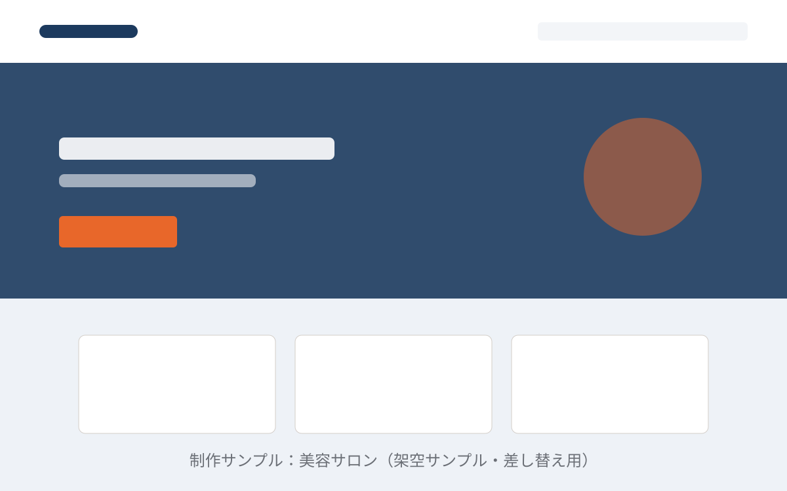
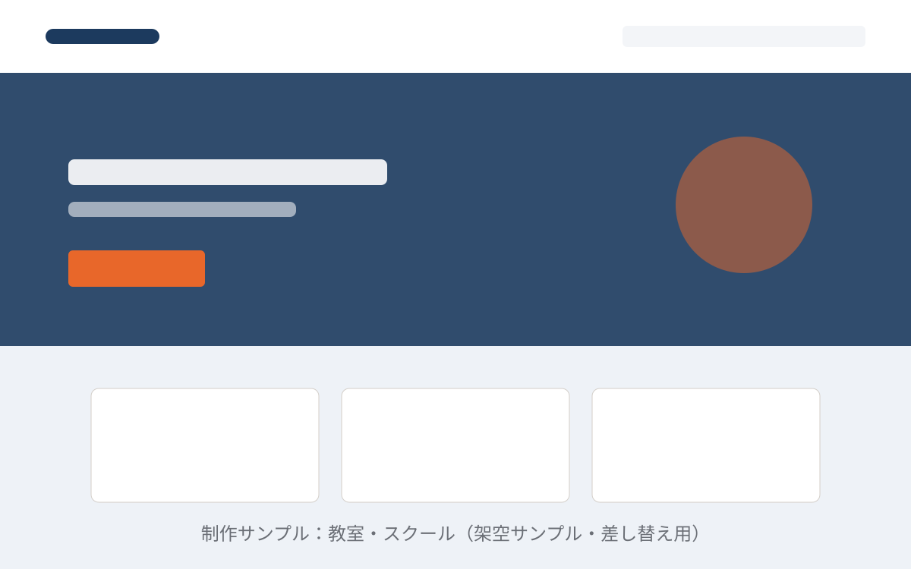

建設・工務店
地域の建設会社サイト（Pro想定）
信頼感を軸に、施工事例・会社情報・採用までを1サイトに整理。導入演出とAIO/GEO対応を組み合わせた構成イメージです。
サンプルは準備中です（本番でサンプルページへリンク）SAMPLES
業種別の架空サンプルで、完成イメージをご紹介します。まずはこのページ内のプレビューでレイアウトや雰囲気をご確認ください。
信頼感を軸に、施工事例・会社情報・採用までを1サイトに整理。導入演出とAIO/GEO対応を組み合わせた構成イメージです。
サンプルは準備中です（本番でサンプルページへリンク）
メニュー・営業時間・地図・予約導線をまとめた、名刺代わりの縦長1ページ構成のイメージです。
サンプルは準備中です（本番でサンプルページへリンク）
診療案内・アクセス・よくある質問など、来院前に知りたい情報を数ページで整理した構成イメージです。
サンプルは準備中です（本番でサンプルページへリンク）
コンセプト・メニュー・スタッフ紹介・予約導線を、写真を主役にして見せる構成イメージです。
サンプルは準備中です（本番でサンプルページへリンク）
料金メニュー・対応エリア・作業の流れ・お問い合わせを分かりやすくまとめた構成イメージです。
サンプルは準備中です（本番でサンプルページへリンク）
コース案内・料金・体験申し込み・よくある質問を、はじめての方向けに整理した構成イメージです。
サンプルは準備中です（本番でサンプルページへリンク）※ 画像・文言はすべて差し替え用のサンプルです。実際の制作では、いただいた素材と原稿をもとに構成します。各サンプルの個別ページは本番公開時に追加します（現在は「準備中」表記）。
「この業種に近い形で作りたい」「ここだけ変えたい」など、サンプルを見ながらのご相談も歓迎です。ご相談・お見積りは無料です。